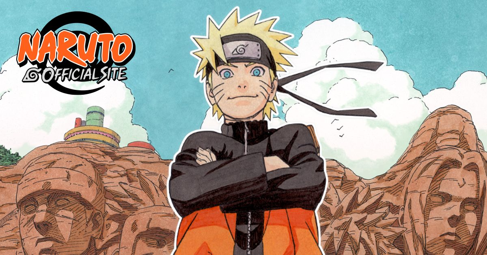

2026-10-14 · IP 深读
美国时间 10 月 10 日，NYCC 2026 的「NARUTO: What's Next?」panel 上，东京电视台把这个沉寂多年的 IP 一次性摊开了四张牌。真正值得盯的不是"岸本回来了"，而是他们给这套东西起的名字——PROJECT RASENGAN，以及那张八个格子只填了四个的路线图。

先把已知事实摆平。这个 panel 上确认的东西一共四件：
《NARUTO: Shadow Rising》——岸本齐史亲自作画的新漫画，2027 年开载，细节留到 Jump Festa 2027（12 月 19–20 日）。这是 2014 年原作完结之后，岸本本人在火影这条线上最直接的一次动手。
《NARUTO × NINKU》——四集联动动画，Studio Pierrot 制作，卡卡西派第七班出任务、自己缺席、鸣人被任命为代理队长，途中三人误入异世界，撞见那个长着青蛙脸的少年风助。
Naruto Mobile——2016 年在中国大陆上线、跑满十年的手机动作对战游戏，决定全球发行，日期未定。
NARUTO Card Game——2027 年 6 月全球同步发售，2027 年 2 月起先办体验会、春季派发 demo 牌组，首发三副起始牌组分别以鸣人、佐助、我爱罗为领袖，第一弹补充包叫 Enter: Naruto Uzumaki!，由 Bandai Cards 操盘。
四件之外，路线图视觉上是八个格子，panel 结束时只认了四个。剩下的四个是什么、什么时候亮，官方没说。东京电视台、集英社、Bandai / BANDAI SPIRITS / Bandai Namco 几家都在制作委员会里。
这是整场发布会里最容易被当成"小项目"忽略、其实最见算计的一步。
一部民工漫的 TV 动画连载，意味着至少两到三年的档期锁定、几百人的原画与外包调度、以及一个几乎不可撤回的叙事承诺。而四集短篇，本质上是一次带止损线的情怀投放：口碑炸了可以继续，扑了也不会留下"又一部烂尾长篇"的历史包袱。
更关键的是，他们挑的联动对象让这次投放的成本收益比变得很怪——好得过分。岸本自己把话说得很白：
"我画《火影忍者》，是因为我个人想看《忍空》的后续。我想很多人已经注意到了，火影受忍空影响极深。没有忍空，就不会有火影。简单说，风助是鸣人暗中的师父。我一直在梦想把这层师徒关系从阴影里拉出来，写成真正的故事。"
这段发言的分量在于，它把一个商业联动变成了一次作者证词。普通联动卖的是"两个 IP 撞在一起"，这次卖的是"你看，火影的根在这儿"——对 1990 年代的 Jump 读者来说，这是一个迟到三十年的答案。桐山光侍也确认，这个企划是岸本主动提的。
于是班底的配置就讲得通了：导演阿部记之，1995 年版《忍空》TV 动画的导演，后来还做过《幽游白书》和《BLEACH》；人设与总作监西尾铁也，原版火影 TV 动画的角色设计，一个人把"两种漫画笔触缝成一张脸"的活全扛了；剧本 Hinatasho，副导演福井希美。音乐是三头并列——高梨康治、-Yaiba-（火影疾风传的老班底）加上本间勇辅（原版《忍空》的配乐），等于在声音层面也把两边各出一半。OP 直接把 FLOW 的《GO!!!》请回来了。声优更是原班：竹内顺子、杉山纪彰、中村千绘，风助则由以皮卡丘闻名的松本梨香回归。
换句话说，这不是"找一拨新人做联动"，是把两套三十年前的人马同时召回。它花的是人情，不是预算。
新漫画的 teaser 给了几帧：火影岩上历代火影的面孔，还有一张正在施工中的第七张；成年鸣人捧着火影的斗篷与帽子；卡卡西在面具底下笑；佐助肃立；小樱低头看着襁褓里的女儿莎拉娜；以及鸣人与佐助的一次对峙。
官方口径是，故事落在第四次忍界大战结束到《博人传》开场之间，大约十年的空档。莎拉娜还是婴儿这个细节，直接把时间锚死在《博人传》（她 11 岁）之前。
为什么这一步聪明？因为它同时避开了两块雷区。往上，它不碰原作已经讲完的部分——四战、终结谷、鸣人当上火影这些章节早被反复咀嚼，再写一遍是自杀。往下，它不碰《博人传》那片争议地带——那条线的动画和漫画长期处在摇摆状态，评价分裂，任何新内容一脚踩进去都要先替前人还债。
而中间那十年，恰恰是整部作品里资料最少、想象空间最大的一段：战争结束了，忍村体系还要不要、佐助的赎罪怎么落地、卡卡西卸任后的空白谁来填、鸣人怎么从一个"要当火影的人"变成一个"已经是火影的人"。teaser 里正在施工的第七张面孔，几乎就是这段时间的主题句——位子已经定了，但雕像还在凿。
对一个完结十二年的 IP 来说，这是性价比最高的叙事位置：不需要新反派、不需要新设定，只需要把一群人已经活过却没有被画出来的年份补上。
本站 10 月 7 日那篇《龙珠超：比鲁斯》里我们说过，东映给龙珠开出的药方是"故事重构"——把旧章重拍一遍，赌的是战斗这个核心资产的保值能力：只要还能打、还能出新形态，观众就还在。
火影这次完全是反过来的。它的四张牌里没有一张靠"打得更狠"：
差距的根源在于两个 IP 的资产结构不同。龙珠的核心资产是"升级"——它是可无限堆叠的数值，所以重制、新形态、新电影都能成立。火影的战斗升级在四战之后已经到顶，再往上堆只会自我消解；它真正留下来的资产是人物关系网和一条清晰的时间轴。所以火影要续命，只能往"关系"和"时间"里找空间，这也正是 Shadow Rising 与 NINKU 联动在做的事。
顺带一提，PROJECT RASENGAN 这个名字本身也压得住题：螺旋丸在设定里是"把查克拉朝各个方向高速旋转、压缩成形"——需要两只手、需要旋转、需要时间。用一件需要长期搓才能成型的术，命名一个铺到 2029 年的多年计划，这个命名不算敷衍。
企划完成度：8.2 / 10（四张牌各自站得住，且彼此不重复，路线图的结构感是近两年日系 IP 里少见的）
兑现确定性：6.5 / 10（8 格只填 4 格；Shadow Rising 连载频率与篇幅未知；Naruto Mobile 全球版无日期；联动动画无档期）
综合期待值：8.5 / 10
这场发布会最反常的一点，是它几乎没有给出任何一个日期。漫画 2027 开载、卡牌 2027 年 6 月，这是仅有的两个硬时间点；联动动画、手游全球版统统"待定"。在业界习惯里，敢在 NYCC 上开这种规模的 panel，通常是为了卖一个具体的东西；这次卖的是一张路线图本身。这更像是对授权方和渠道商喊话，而不只是对粉丝。
把 Naruto Mobile 放进这张路线图，是四张牌里最弱的一张，但也是最诚实的一张。一款 2016 年的手机对战游戏在中国大陆跑了十年，现在决定出海——这不是"新内容"，这是把存量资产重新定价。它的价值不在于游戏质量，而在于给全球发行铺一条低成本的渠道试水：先看看东南亚、拉美的火影用户还在不在、肯不肯付费。真正的风险是，如果全球版拿的还是十年前的框架，那它对 IP 口碑是减分项。
| 维度 | 龙珠（东映路线） | 火影（Project Rasengan） |
|---|---|---|
| 核心资产 | 战斗升级 | 人物关系 + 时间轴 |
| 主要手法 | 重制旧章 + 新形态 | 回填空白 + 认祖归宗 |
| 作者角色 | 已故，靠遗产运营 | 在世，亲自作画并监修 |
| 最大风险 | 设定膨胀、战力通胀 | 连载体力、日程跳票 |
两条路没有优劣，只有适配。火影这次选了一条依赖作者本人的路——岸本既画新漫画，又和桐山一起监修联动的全部四集。好处是正统性无可置疑，坏处是所有日程都挂在一个人身上。
我们按 panel 结束后各家报道（GIGAZINE、GameBusiness.jp、Hypebeast、Comic Vibe 等）交叉核对，做了一张简单的确认度清单，用来判断"现在能信多少"：
结论：目前可讨论的信息量大约是整盘棋的四成。这也意味着，接下来最该盯的不是这四个项目的进展，而是 12 月 19–20 日的 Jump Festa 2027——那才是这盘棋第一次亮出后半张牌的时机。
大多数完结 IP 的"复活"，本质是再割一次：重制一部、复刻一版、出一个手游。PROJECT RASENGAN 不一样的地方在于，它要改的不是一个项目，而是这个 IP 的生产方式——漫画、动画、卡牌、手游四条线并行，用一张铺到 2029 年的路线图串起来，由同一个制作委员会统一排期。
这条路的成败，跟"火影还火不火"关系不大，跟三件很枯燥的事关系很大：岸本的连载能不能按时交、联动动画的档期能不能塞进 2027 年的排片表、以及那四个空格子到底是什么。
对观众的现实意义其实很朴素：先别急着兴奋，也别急着骂。现在手里握着的只有一支预告、一段作者证词和一张半成品的路线图。真正的答案，在年底的 Jump Festa。